This article illustrates and provides a discussion and implementation of Image Oil Painting Filters and related Image Cartoon Filters.
Sunflower: Oil Painting, Filter 5, Levels 30, Cartoon Threshold 30
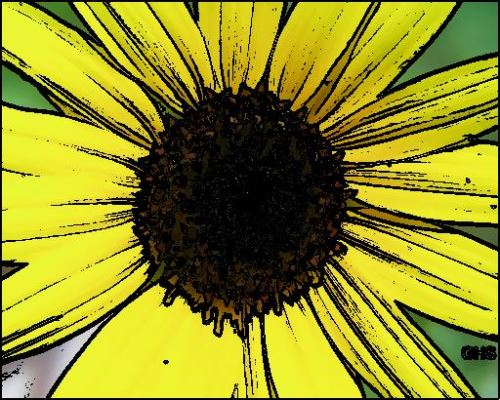
There are no special requirements or instructions for building the sample source code.
A sample application accompanies this article. The sample application creates a visual implementation of the concepts discussed throughout this article. Source/input images can be selected from the local file system and if desired filter result images can be saved to the local file system.
The two main types of functionality exposed by the sample application can be described as Image Oil Painting Filters and Image Cartoon Filters. The user interface provides the following user input options:
The following image is screenshot of the Oil Painting Cartoon Filter sample application in action:
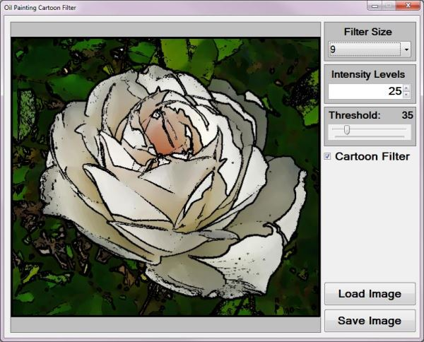
Rose: Oil Painting, Filter 15, Levels 10
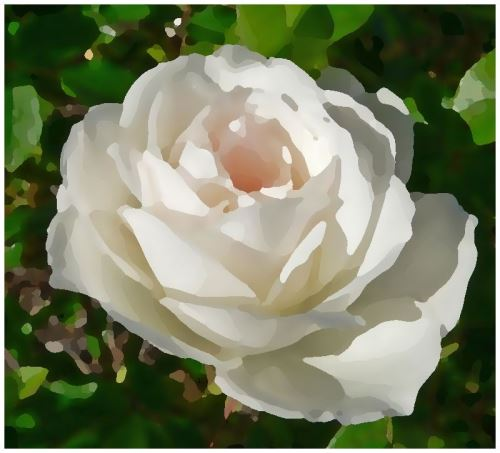
The Image Oil Painting Filter consists of two main components: colour gradients and pixel colour intensities. As implied by the title when implementing this image filter resulting images are similar in appearance to images of Oil Paintings. Result images express a lesser degree of image detail when compared to source/input images. This filter also tends to output images which appear to have smaller colour ranges.
Four steps are required when implementing an Oil Painting Filter, indicated as follows:
Roses: Oil Painting, Filter 11, Levels 60, Cartoon Threshold 80
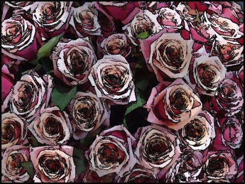
When calculating colour intensity reduced to fit the number of levels specified the algorithm implemented can be expressed as follows:
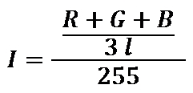
In the algorithm listed above the variables implemented can be explained as follows:
Rose: Oil Painting, Filter 15, Levels 30
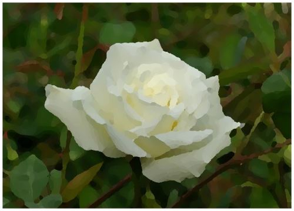
A Cartoon Filter effect can be achieved by combining an Image Oil Painting filter and an Edge Detection Filter. The Oil Painting filter has the effect of creating more gradual image colour gradients, in other words reducing image edge intensity.
The steps required in implementing a Cartoon filter can be listed as follows:
Daisy: Oil Painting, Filter 7, Levels 30, Cartoon Threshold 40
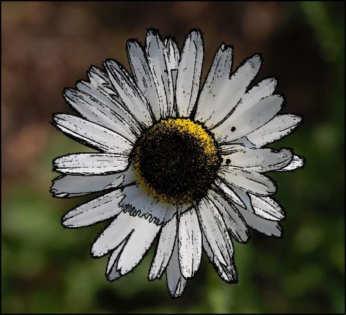
In the sample source code edge detection has been implemented through Gradient Based Edge Detection. This method of edge detection compares the difference in colour gradients between a pixel’s neighbouring pixels. A pixel forms part of an edge if the difference in neighbouring pixel colour values exceeds a specified threshold value. The steps involved in Gradient Based Edge Detection as follows:
Rose: Oil Painting, Filter 9, Levels 30
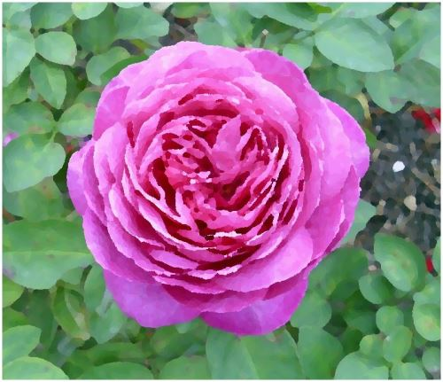
The sample source code defines the OilPaintFilter method, an extension method targeting the Bitmap class. This method determines the maximum colour intensity from a pixel’s neighbouring pixels. The definition detailed as follows:
public static Bitmap OilPaintFilter(this Bitmap sourceBitmap,
int levels,
int filterSize)
{
BitmapData sourceData =
sourceBitmap.LockBits(new Rectangle(0, 0,
sourceBitmap.Width, sourceBitmap.Height),
ImageLockMode.ReadOnly,
PixelFormat.Format32bppArgb);
byte[] pixelBuffer = new byte[sourceData.Stride *
sourceData.Height];
byte[] resultBuffer = new byte[sourceData.Stride *
sourceData.Height];
Marshal.Copy(sourceData.Scan0, pixelBuffer, 0,
pixelBuffer.Length);
sourceBitmap.UnlockBits(sourceData);
int[] intensityBin = new int [levels];
int[] blueBin = new int [levels];
int[] greenBin = new int [levels];
int[] redBin = new int [levels];
levels = levels - 1;
int filterOffset = (filterSize - 1) / 2;
int byteOffset = 0;
int calcOffset = 0;
int currentIntensity = 0;
int maxIntensity = 0;
int maxIndex = 0;
double blue = 0;
double green = 0;
double red = 0;
for (int offsetY = filterOffset; offsetY <
sourceBitmap.Height - filterOffset; offsetY++)
{
for (int offsetX = filterOffset; offsetX <
sourceBitmap.Width - filterOffset; offsetX++)
{
blue = green = red = 0;
currentIntensity = maxIntensity = maxIndex = 0;
intensityBin = new int[levels + 1];
blueBin = new int[levels + 1];
greenBin = new int[levels + 1];
redBin = new int[levels + 1];
byteOffset = offsetY *
sourceData.Stride + offsetX * 4;
for (int filterY = -filterOffset;
filterY <= filterOffset; filterY++)
{
for (int filterX = -filterOffset;
filterX <= filterOffset; filterX++)
{
calcOffset = byteOffset +
(filterX * 4) +
(filterY * sourceData.Stride);
currentIntensity = (int )Math.Round(((double)
(pixelBuffer[calcOffset] +
pixelBuffer[calcOffset + 1] +
pixelBuffer[calcOffset + 2]) / 3.0 *
(levels)) / 255.0);
intensityBin[currentIntensity] += 1;
blueBin[currentIntensity] += pixelBuffer[calcOffset];
greenBin[currentIntensity] += pixelBuffer[calcOffset + 1];
redBin[currentIntensity] += pixelBuffer[calcOffset + 2];
if (intensityBin[currentIntensity] > maxIntensity)
{
maxIntensity = intensityBin[currentIntensity];
maxIndex = currentIntensity;
}
}
}
blue = blueBin[maxIndex] / maxIntensity;
green = greenBin[maxIndex] / maxIntensity;
red = redBin[maxIndex] / maxIntensity;
resultBuffer[byteOffset] = ClipByte(blue);
resultBuffer[byteOffset + 1] = ClipByte(green);
resultBuffer[byteOffset + 2] = ClipByte(red);
resultBuffer[byteOffset + 3] = 255;
}
}
Bitmap resultBitmap = new Bitmap(sourceBitmap.Width,
sourceBitmap.Height);
BitmapData resultData =
resultBitmap.LockBits(new Rectangle(0, 0,
resultBitmap.Width, resultBitmap.Height),
ImageLockMode.WriteOnly,
PixelFormat.Format32bppArgb);
Marshal.Copy(resultBuffer, 0, resultData.Scan0,
resultBuffer.Length);
resultBitmap.UnlockBits(resultData);
return resultBitmap;
}
public static Bitmap OilPaintFilter(this Bitmap sourceBitmap, int levels, int filterSize) { BitmapData sourceData = sourceBitmap.LockBits(new Rectangle(0, 0, sourceBitmap.Width, sourceBitmap.Height), ImageLockMode.ReadOnly, PixelFormat.Format32bppArgb); byte[] pixelBuffer = new byte[sourceData.Stride * sourceData.Height]; byte[] resultBuffer = new byte[sourceData.Stride * sourceData.Height]; Marshal.Copy(sourceData.Scan0, pixelBuffer, 0, pixelBuffer.Length); sourceBitmap.UnlockBits(sourceData); int[] intensityBin = new int [levels]; int[] blueBin = new int [levels]; int[] greenBin = new int [levels]; int[] redBin = new int [levels]; levels = levels - 1; int filterOffset = (filterSize - 1) / 2; int byteOffset = 0; int calcOffset = 0; int currentIntensity = 0; int maxIntensity = 0; int maxIndex = 0; double blue = 0; double green = 0; double red = 0; for (int offsetY = filterOffset; offsetY < sourceBitmap.Height - filterOffset; offsetY++) { for (int offsetX = filterOffset; offsetX < sourceBitmap.Width - filterOffset; offsetX++) { blue = green = red = 0; currentIntensity = maxIntensity = maxIndex = 0; intensityBin = new int[levels + 1]; blueBin = new int[levels + 1]; greenBin = new int[levels + 1]; redBin = new int[levels + 1]; byteOffset = offsetY * sourceData.Stride + offsetX * 4; for (int filterY = -filterOffset; filterY <= filterOffset; filterY++) { for (int filterX = -filterOffset; filterX <= filterOffset; filterX++) { calcOffset = byteOffset + (filterX * 4) + (filterY * sourceData.Stride); currentIntensity = (int )Math.Round(((double) (pixelBuffer[calcOffset] + pixelBuffer[calcOffset + 1] + pixelBuffer[calcOffset + 2]) / 3.0 * (levels)) / 255.0); intensityBin[currentIntensity] += 1; blueBin[currentIntensity] += pixelBuffer[calcOffset]; greenBin[currentIntensity] += pixelBuffer[calcOffset + 1]; redBin[currentIntensity] += pixelBuffer[calcOffset + 2]; if (intensityBin[currentIntensity] > maxIntensity) { maxIntensity = intensityBin[currentIntensity]; maxIndex = currentIntensity; } } } blue = blueBin[maxIndex] / maxIntensity; green = greenBin[maxIndex] / maxIntensity; red = redBin[maxIndex] / maxIntensity; resultBuffer[byteOffset] = ClipByte(blue); resultBuffer[byteOffset + 1] = ClipByte(green); resultBuffer[byteOffset + 2] = ClipByte(red); resultBuffer[byteOffset + 3] = 255; } } Bitmap resultBitmap = new Bitmap(sourceBitmap.Width, sourceBitmap.Height); BitmapData resultData = resultBitmap.LockBits(new Rectangle(0, 0, resultBitmap.Width, resultBitmap.Height), ImageLockMode.WriteOnly, PixelFormat.Format32bppArgb); Marshal.Copy(resultBuffer, 0, resultData.Scan0, resultBuffer.Length); resultBitmap.UnlockBits(resultData); return resultBitmap; }
Rose: Oil Painting, Filter 7, Levels 20, Cartoon Threshold 20
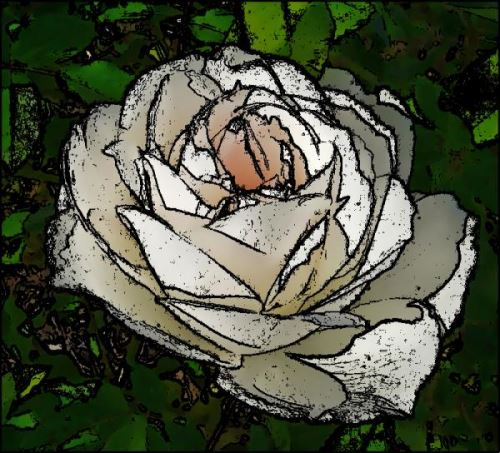
The sample source code defines the CheckThreshold method. The purpose of this method to determine the difference in colour between two pixels. In addition this method compares the colour difference and the specified threshold value. The following code snippet provides the implementation:
private static bool CheckThreshold(byte[] pixelBuffer,
int offset1, int offset2,
ref int gradientValue,
byte threshold,
int divideBy = 1)
{
gradientValue +=
Math.Abs(pixelBuffer[offset1] -
pixelBuffer[offset2]) / divideBy;
gradientValue +=
Math.Abs(pixelBuffer[offset1 + 1] -
pixelBuffer[offset2 + 1]) / divideBy;
gradientValue +=
Math.Abs(pixelBuffer[offset1 + 2] -
pixelBuffer[offset2 + 2]) / divideBy;
return (gradientValue >= threshold);
}
private static bool CheckThreshold(byte[] pixelBuffer, int offset1, int offset2, ref int gradientValue, byte threshold, int divideBy = 1) { gradientValue += Math.Abs(pixelBuffer[offset1] - pixelBuffer[offset2]) / divideBy; gradientValue += Math.Abs(pixelBuffer[offset1 + 1] - pixelBuffer[offset2 + 1]) / divideBy; gradientValue += Math.Abs(pixelBuffer[offset1 + 2] - pixelBuffer[offset2 + 2]) / divideBy; return (gradientValue >= threshold); }
Rose: Oil Painting, Filter 13, Levels 15
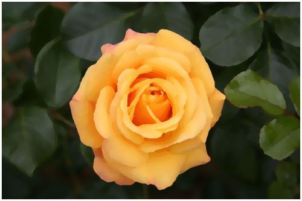
The GradientBasedEdgeDetectionFilter method has been defined as an extension method targeting the Bitmap class. This method iterates each pixel forming part of the source/input image. Whilst iterating pixels the GradientBasedEdgeDetectionFilter extension method determines if the colour gradients in various directions exceeds the specified threshold value. A pixel is considered as part of an edge if a colour gradient exceeds the threshold value. The implementation as follows:
public static Bitmap GradientBasedEdgeDetectionFilter(
this Bitmap sourceBitmap,
byte threshold = 0)
{
BitmapData sourceData =
sourceBitmap.LockBits(new Rectangle (0, 0,
sourceBitmap.Width, sourceBitmap.Height),
ImageLockMode.ReadOnly,
PixelFormat.Format32bppArgb);
byte[] pixelBuffer = new byte[sourceData.Stride * sourceData.Height];
byte[] resultBuffer = new byte[sourceData.Stride * sourceData.Height];
Marshal.Copy(sourceData.Scan0, pixelBuffer, 0, pixelBuffer.Length);
sourceBitmap.UnlockBits(sourceData);
int sourceOffset = 0, gradientValue = 0;
bool exceedsThreshold = false;
for(int offsetY = 1; offsetY < sourceBitmap.Height - 1; offsetY++)
{
for(int offsetX = 1; offsetX < sourceBitmap.Width - 1; offsetX++)
{
sourceOffset = offsetY * sourceData.Stride + offsetX * 4;
gradientValue = 0;
exceedsThreshold = true ;
// Horizontal Gradient
CheckThreshold(pixelBuffer,
sourceOffset - 4,
sourceOffset + 4,
ref gradientValue, threshold, 2);
// Vertical Gradient
exceedsThreshold =
CheckThreshold(pixelBuffer,
sourceOffset - sourceData.Stride,
sourceOffset + sourceData.Stride,
ref gradientValue, threshold, 2);
if (exceedsThreshold == false )
{
gradientValue = 0;
// Horizontal Gradient
exceedsThreshold =
CheckThreshold(pixelBuffer,
sourceOffset - 4,
sourceOffset + 4,
ref gradientValue, threshold);
if (exceedsThreshold == false )
{
gradientValue = 0;
// Vertical Gradient
exceedsThreshold =
CheckThreshold(pixelBuffer,
sourceOffset - sourceData.Stride,
sourceOffset + sourceData.Stride,
ref gradientValue, threshold);
if (exceedsThreshold == false )
{
gradientValue = 0;
// Diagonal Gradient : NW-SE
CheckThreshold(pixelBuffer,
sourceOffset - 4 - sourceData.Stride,
sourceOffset + 4 + sourceData.Stride,
ref gradientValue, threshold, 2);
// Diagonal Gradient : NE-SW
exceedsThreshold =
CheckThreshold(pixelBuffer,
sourceOffset - sourceData.Stride + 4,
sourceOffset - 4 + sourceData.Stride,
ref gradientValue, threshold, 2);
if (exceedsThreshold == false )
{
gradientValue = 0;
// Diagonal Gradient : NW-SE
exceedsThreshold =
CheckThreshold(pixelBuffer,
sourceOffset - 4 - sourceData.Stride,
sourceOffset + 4 + sourceData.Stride,
ref gradientValue, threshold);
if (exceedsThreshold == false )
{
gradientValue = 0;
// Diagonal Gradient : NE-SW
exceedsThreshold =
CheckThreshold(pixelBuffer,
sourceOffset - sourceData.Stride + 4,
sourceOffset + sourceData.Stride - 4,
ref gradientValue, threshold);
}
}
}
}
}
resultBuffer[sourceOffset] = (byte)(exceedsThreshold ? 255 : 0);
resultBuffer[sourceOffset + 1] = resultBuffer[sourceOffset];
resultBuffer[sourceOffset + 2] = resultBuffer[sourceOffset];
resultBuffer[sourceOffset + 3] = 255;
}
}
Bitmap resultBitmap = new Bitmap(sourceBitmap.Width, sourceBitmap.Height);
BitmapData resultData = resultBitmap.LockBits(new Rectangle (0, 0,
resultBitmap.Width, resultBitmap.Height),
ImageLockMode.WriteOnly, PixelFormat.Format32bppArgb);
Marshal.Copy(resultBuffer, 0, resultData.Scan0, resultBuffer.Length);
resultBitmap.UnlockBits(resultData);
return resultBitmap;
}
public static Bitmap GradientBasedEdgeDetectionFilter( this Bitmap sourceBitmap, byte threshold = 0) { BitmapData sourceData = sourceBitmap.LockBits(new Rectangle (0, 0, sourceBitmap.Width, sourceBitmap.Height), ImageLockMode.ReadOnly, PixelFormat.Format32bppArgb); byte[] pixelBuffer = new byte[sourceData.Stride * sourceData.Height]; byte[] resultBuffer = new byte[sourceData.Stride * sourceData.Height]; Marshal.Copy(sourceData.Scan0, pixelBuffer, 0, pixelBuffer.Length); sourceBitmap.UnlockBits(sourceData); int sourceOffset = 0, gradientValue = 0; bool exceedsThreshold = false; for(int offsetY = 1; offsetY < sourceBitmap.Height - 1; offsetY++) { for(int offsetX = 1; offsetX < sourceBitmap.Width - 1; offsetX++) { sourceOffset = offsetY * sourceData.Stride + offsetX * 4; gradientValue = 0; exceedsThreshold = true ; // Horizontal Gradient CheckThreshold(pixelBuffer, sourceOffset - 4, sourceOffset + 4, ref gradientValue, threshold, 2); // Vertical Gradient exceedsThreshold = CheckThreshold(pixelBuffer, sourceOffset - sourceData.Stride, sourceOffset + sourceData.Stride, ref gradientValue, threshold, 2); if (exceedsThreshold == false ) { gradientValue = 0; // Horizontal Gradient exceedsThreshold = CheckThreshold(pixelBuffer, sourceOffset - 4, sourceOffset + 4, ref gradientValue, threshold); if (exceedsThreshold == false ) { gradientValue = 0; // Vertical Gradient exceedsThreshold = CheckThreshold(pixelBuffer, sourceOffset - sourceData.Stride, sourceOffset + sourceData.Stride, ref gradientValue, threshold); if (exceedsThreshold == false ) { gradientValue = 0; // Diagonal Gradient : NW-SE CheckThreshold(pixelBuffer, sourceOffset - 4 - sourceData.Stride, sourceOffset + 4 + sourceData.Stride, ref gradientValue, threshold, 2); // Diagonal Gradient : NE-SW exceedsThreshold = CheckThreshold(pixelBuffer, sourceOffset - sourceData.Stride + 4, sourceOffset - 4 + sourceData.Stride, ref gradientValue, threshold, 2); if (exceedsThreshold == false ) { gradientValue = 0; // Diagonal Gradient : NW-SE exceedsThreshold = CheckThreshold(pixelBuffer, sourceOffset - 4 - sourceData.Stride, sourceOffset + 4 + sourceData.Stride, ref gradientValue, threshold); if (exceedsThreshold == false ) { gradientValue = 0; // Diagonal Gradient : NE-SW exceedsThreshold = CheckThreshold(pixelBuffer, sourceOffset - sourceData.Stride + 4, sourceOffset + sourceData.Stride - 4, ref gradientValue, threshold); } } } } } resultBuffer[sourceOffset] = (byte)(exceedsThreshold ? 255 : 0); resultBuffer[sourceOffset + 1] = resultBuffer[sourceOffset]; resultBuffer[sourceOffset + 2] = resultBuffer[sourceOffset]; resultBuffer[sourceOffset + 3] = 255; } } Bitmap resultBitmap = new Bitmap(sourceBitmap.Width, sourceBitmap.Height); BitmapData resultData = resultBitmap.LockBits(new Rectangle (0, 0, resultBitmap.Width, resultBitmap.Height), ImageLockMode.WriteOnly, PixelFormat.Format32bppArgb); Marshal.Copy(resultBuffer, 0, resultData.Scan0, resultBuffer.Length); resultBitmap.UnlockBits(resultData); return resultBitmap; }
Rose: Oil Painting, Filter 7, Levels 20, Cartoon Threshold 20
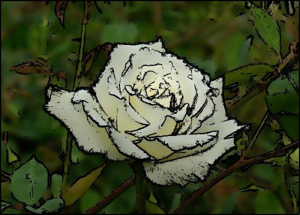
The CartoonFilter extension method serves to combine images generated by the OilPaintFilter and GradientBasedEdgeDetectionFilter methods. The CartoonFilter method being defined as an extension method targets the Bitmap class. In this method pixels detected as forming part of an edge are set to black in Oil Painting filtered images. The definition as follows:
public static Bitmap CartoonFilter(this Bitmap sourceBitmap,
int levels,
int filterSize,
byte threshold)
{
Bitmap paintFilterImage =
sourceBitmap.OilPaintFilter(levels, filterSize);
Bitmap edgeDetectImage =
sourceBitmap.GradientBasedEdgeDetectionFilter(threshold);
BitmapData paintData =
paintFilterImage.LockBits(new Rectangle (0, 0,
paintFilterImage.Width, paintFilterImage.Height),
ImageLockMode.ReadOnly,
PixelFormat.Format32bppArgb);
byte[] paintPixelBuffer = new byte[paintData.Stride *
paintData.Height];
Marshal.Copy(paintData.Scan0, paintPixelBuffer, 0,
paintPixelBuffer.Length);
paintFilterImage.UnlockBits(paintData);
BitmapData edgeData =
edgeDetectImage.LockBits(new Rectangle (0, 0,
edgeDetectImage.Width, edgeDetectImage.Height),
ImageLockMode.ReadOnly,
PixelFormat.Format32bppArgb);
byte[] edgePixelBuffer = new byte[edgeData.Stride *
edgeData.Height];
Marshal.Copy(edgeData.Scan0, edgePixelBuffer, 0,
edgePixelBuffer.Length);
edgeDetectImage.UnlockBits(edgeData);
byte[] resultBuffer = new byte [edgeData.Stride *
edgeData.Height];
for(int k = 0; k + 4 < paintPixelBuffer.Length; k += 4)
{
if (edgePixelBuffer[k] == 255 ||
edgePixelBuffer[k + 1] == 255 ||
edgePixelBuffer[k + 2] == 255)
{
resultBuffer[k] = 0;
resultBuffer[k + 1] = 0;
resultBuffer[k + 2] = 0;
resultBuffer[k + 3] = 255;
}
else
{
resultBuffer[k] = paintPixelBuffer[k];
resultBuffer[k + 1] = paintPixelBuffer[k + 1];
resultBuffer[k + 2] = paintPixelBuffer[k + 2];
resultBuffer[k + 3] = 255;
}
}
Bitmap resultBitmap = new Bitmap(sourceBitmap.Width,
sourceBitmap.Height);
BitmapData resultData =
resultBitmap.LockBits(new Rectangle (0, 0,
resultBitmap.Width, resultBitmap.Height),
ImageLockMode.WriteOnly,
PixelFormat.Format32bppArgb);
Marshal.Copy(resultBuffer, 0, resultData.Scan0,
resultBuffer.Length);
resultBitmap.UnlockBits(resultData);
return resultBitmap;
}
public static Bitmap CartoonFilter(this Bitmap sourceBitmap, int levels, int filterSize, byte threshold) { Bitmap paintFilterImage = sourceBitmap.OilPaintFilter(levels, filterSize); Bitmap edgeDetectImage = sourceBitmap.GradientBasedEdgeDetectionFilter(threshold); BitmapData paintData = paintFilterImage.LockBits(new Rectangle (0, 0, paintFilterImage.Width, paintFilterImage.Height), ImageLockMode.ReadOnly, PixelFormat.Format32bppArgb); byte[] paintPixelBuffer = new byte[paintData.Stride * paintData.Height]; Marshal.Copy(paintData.Scan0, paintPixelBuffer, 0, paintPixelBuffer.Length); paintFilterImage.UnlockBits(paintData); BitmapData edgeData = edgeDetectImage.LockBits(new Rectangle (0, 0, edgeDetectImage.Width, edgeDetectImage.Height), ImageLockMode.ReadOnly, PixelFormat.Format32bppArgb); byte[] edgePixelBuffer = new byte[edgeData.Stride * edgeData.Height]; Marshal.Copy(edgeData.Scan0, edgePixelBuffer, 0, edgePixelBuffer.Length); edgeDetectImage.UnlockBits(edgeData); byte[] resultBuffer = new byte [edgeData.Stride * edgeData.Height]; for(int k = 0; k + 4 < paintPixelBuffer.Length; k += 4) { if (edgePixelBuffer[k] == 255 || edgePixelBuffer[k + 1] == 255 || edgePixelBuffer[k + 2] == 255) { resultBuffer[k] = 0; resultBuffer[k + 1] = 0; resultBuffer[k + 2] = 0; resultBuffer[k + 3] = 255; } else { resultBuffer[k] = paintPixelBuffer[k]; resultBuffer[k + 1] = paintPixelBuffer[k + 1]; resultBuffer[k + 2] = paintPixelBuffer[k + 2]; resultBuffer[k + 3] = 255; } } Bitmap resultBitmap = new Bitmap(sourceBitmap.Width, sourceBitmap.Height); BitmapData resultData = resultBitmap.LockBits(new Rectangle (0, 0, resultBitmap.Width, resultBitmap.Height), ImageLockMode.WriteOnly, PixelFormat.Format32bppArgb); Marshal.Copy(resultBuffer, 0, resultData.Scan0, resultBuffer.Length); resultBitmap.UnlockBits(resultData); return resultBitmap; }
Rose: Oil Painting, Filter 9, Levels 25, Cartoon Threshold 25
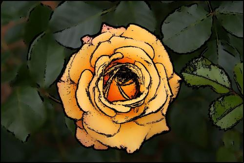
This article features a number of sample images. All featured images have been licensed allowing for reproduction. The following image files feature a sample images:
This article is based on an article originally posted on my blog: http://softwarebydefault.com/2013/06/29/oil-painting-cartoon-filter/ If you have any questions/comments please feel free to make use of the Q&A section on this page, also please remember to rate this article.
{kind=link}
_.jpg){kind=link}
{kind=link}
{kind=link}
{kind=link}
{kind=link}
{kind=link}